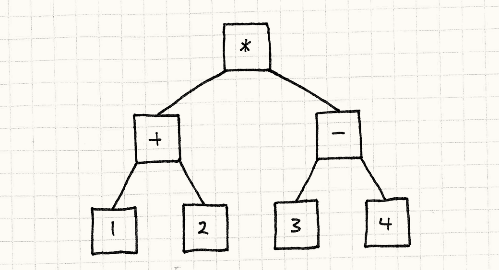
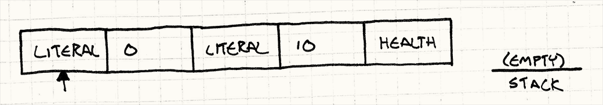
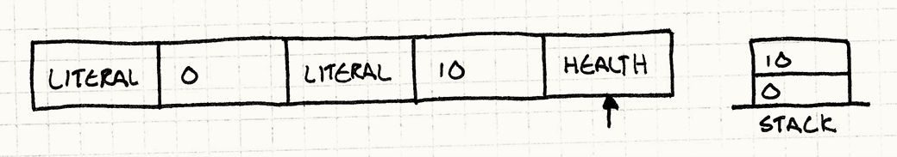
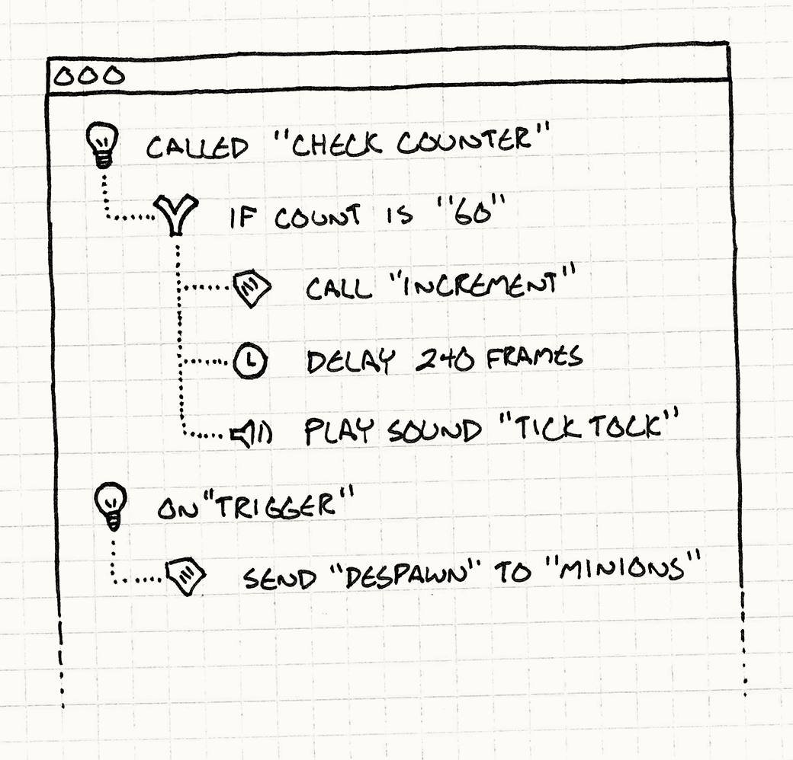

Bytecode
Give behavior the flexibility of data by encoding it as instructions for a virtual machine.
Leonard Nimoy
Motivation
Making games may be fun, but it certainly ain’t easy. Modern games require enormous, complex codebases. Console manufacturers and app marketplace gatekeepers have stringent quality requirements, and a single crash bug can prevent your game from shipping.
At the same time, we’re expected to squeeze every drop of performance out of the platform. Games push hardware like nothing else, and we have to optimize relentlessly just to keep pace with the competition.
@Override public Environment visitBlockStmt(Stmt.Block stmt, Environment env) { Environment before = env; env = env.enterScope(); for (Stmt statement : stmt.statements) { env = execute(statement, env); } return before; }
To handle these high stability and performance requirements, we reach for heavyweight languages like C++ that have both low-level expressiveness to make the most of the hardware and rich type systems to prevent or at least corral bugs.
|---------|---------|---------|---------|---------|---------|---
We pride ourselves on our skill at this, but it has its cost. Being a proficient programmer takes years of dedicated training, after which you must contend with the sheer scale of your codebase. Build times for large games can vary somewhere between “go get a coffee” and “go roast your own beans, hand-grind them, pull an espresso, foam some milk, and practice your latte art in the froth”.
case TYPE_INITIALIZER: case TYPE_METHOD: { int length = currentClass->name.length + parser.previous.length + 1; char* chars = REALLOCATE(NULL, char, length + 1); memcpy(chars, currentClass->name.start, currentClass->name.length); chars[currentClass->name.length] = '.'; memcpy(chars + currentClass->name.length + 1, parser.previous.start, parser.previous.length); chars[length] = '\0'; current->function->name = takeString(chars, length); break; } case TYPE_TOP_LEVEL: current->function->name = copyString("script", 6); break;
On top of these challenges, games have one more nasty constraint: fun. Players demand a play experience that’s both novel and yet carefully balanced. That requires constant iteration, but if every tweak requires bugging an engineer to muck around in piles of low-level code and then waiting for a glacial recompile, you’ve killed your creative flow.
Spell fight!
Let’s say we’re working on a magic-based fighting game. A pair of wizards square off and fling enchantments at each other until a victor is pronounced. We could define these spells in code, but that means an engineer has to be involved every time one is modified. When a designer wants to tweak a few numbers and get a feel for them, they have to recompile the entire game, reboot it, and get back into a fight.
Like most games these days, we also need to be able to update the game after it ships, both to fix bugs and to add new content. If all of these spells are hard-coded, then updating them means patching the actual game executable.
class NumberExpression : public Expression { public: NumberExpression(double value) : value_(value) {} virtual double evaluate() { return value_; } private: double value_; };
Let’s take things a bit further and say that we also want to support modding. We want users to be able to create their own spells. If those are in code, that means every modder needs a full compiler toolchain to build the game, and we have to release the sources. Worse, if they have a bug in their spell, it can crash the game on some other player’s machine.
Data > code
It’s pretty clear that our engine’s implementation language isn’t the right fit. We need spells to be safely sandboxed from the core game. We want them to be easy to modify, easy to reload, and physically separate from the rest of the executable.
I don’t know about you, but to me that sounds a lot like data. If we can define our behavior in separate data files that the game engine loads and “executes” in some way, we can achieve all of our goals.
We just need to figure out what “execute” means for data. How do you make some bytes in a file express behavior? There are a few ways to do this. I think it will help you get a picture of this pattern’s strengths and weaknesses if we compare it to another one: the Interpreter pattern.
The Interpreter pattern
I could write a whole chapter on this pattern, but four other guys already covered that for me. Instead, I’ll cram the briefest of introductions in here. It starts with a language — think programming language — that you want to execute. Say, for example, it supports arithmetic expressions like this:
(1 + 2) * (3 - 4)
Then, you take each piece of that expression, each rule in the language’s grammar, and turn it into an object. The number literals will be objects:

Basically, they’re little wrappers around the raw value. The operators will be objects too, and they’ll have references to their operands. If you take into account the parentheses and precedence, that expression magically turns into a little tree of objects like so:

The Interpreter pattern isn’t about creating that tree; it’s about executing it. The way it works is pretty clever. Each object in the tree is an expression or a subexpression. In true object-oriented fashion, we’ll let expressions evaluate themselves.
First, we define a base interface that all expressions implement:
Then, we define a class that implements this interface for each kind of expression in our language’s grammar. The simplest one is numbers:
A literal number expression simply evaluates to its value. Addition and multiplication are a bit more complex because they contain subexpressions. Before they can evaluate themselves, they need to recursively evaluate their subexpressions. Like so:
Pretty neat right? Just a couple of simple classes and now we can represent and evaluate arbitrarily complex arithmetic expressions. We just need to create the right objects and wire them up correctly.
It’s a beautiful, simple pattern, but it has some problems. Look up at the illustration. What do you see? Lots of little boxes, and lots of arrows between them. Code is represented as a sprawling fractal tree of tiny objects. That has some unpleasant consequences:
-
Loading it from disk requires instantiating and wiring up tons of these small objects.
-
Those objects and the pointers between them use a lot of memory. On a 32-bit machine, that little arithmetic expression up there takes up at least 68 bytes, not including padding.
-
Traversing the pointers into subexpressions is murder on your data cache. Meanwhile, all of those virtual method calls wreak carnage on your instruction cache.
Put those together, and what do they spell? S-L-O-W. There’s a reason most programming languages in wide use aren’t based on the Interpreter pattern. It’s just too slow, and it uses up too much memory.
Machine code, virtually
Consider our game. When we run it, the player’s computer doesn’t traverse a bunch of C++ grammar tree structures at runtime. Instead, we compile it ahead of time to machine code, and the CPU runs that. What’s machine code got going for it?
-
It’s dense. It’s a solid, contiguous blob of binary data, and no bit goes to waste.
-
It’s linear. Instructions are packed together and executed one right after another. No jumping around in memory (unless you’re doing actual control flow, of course).
-
It’s low-level. Each instruction does one relatively minimal thing, and interesting behavior comes from composing them.
-
It’s fast. As a consequence of all of these (well, and the fact that it’s implemented directly in hardware), machine code runs like the wind.
This sounds swell, but we don’t want actual machine code for our spells. Letting users provide machine code which our game executes is just begging for security problems. What we need is a compromise between the performance of machine code and the safety of the Interpreter pattern.
What if instead of loading actual machine code and executing it directly, we defined our own virtual machine code? We’d then write a little emulator for it in our game. It would be similar to machine code — dense, linear, relatively low-level — but would also be handled entirely by our game so we could safely sandbox it.
We’d call our little emulator a virtual machine (or “VM” for short), and the synthetic binary machine code it runs bytecode. It’s got the flexibility and ease of use of defining things in data, but it has better performance than higher-level representations like the Interpreter pattern.
This sounds daunting, though. My goal for the rest of this chapter is to show you that if you keep your feature list pared down, it’s actually pretty approachable. Even if you end up not using this pattern yourself, you’ll at least have a better understanding of Lua and many other languages which are implemented using it.
The Pattern
An instruction set defines the low-level operations that can be performed. A series of instructions is encoded as a sequence of bytes. A virtual machine executes these instructions one at a time, using a stack for intermediate values. By combining instructions, complex high-level behavior can be defined.
When to Use It
This is the most complex pattern in this book, and it’s not something to throw into your game lightly. Use it when you have a lot of behavior you need to define and your game’s implementation language isn’t a good fit because:
-
It’s too low-level, making it tedious or error-prone to program in.
-
Iterating on it takes too long due to slow compile times or other tooling issues.
-
It has too much trust. If you want to ensure the behavior being defined can’t break the game, you need to sandbox it from the rest of the codebase.
Of course, that list describes a bunch of your game. Who doesn’t want a faster iteration loop or more safety? However, that doesn’t come for free. Bytecode is slower than native code, so it isn’t a good fit for performance-critical parts of your engine.
Keep in Mind
There’s something seductive about creating your own language or system-within-a-system. I’ll be doing a minimal example here, but in the real world, these things tend to grow like vines.
Every time I see someone define a little language or a scripting system, they say, “Don’t worry, it will be tiny.” Then, inevitably, they add more and more little features until it’s a full-fledged language. Except, unlike some other languages, it grew in an ad-hoc, organic fashion and has all of the architectural elegance of a shanty town.
Of course, there’s nothing wrong with making a full-fledged language. Just make sure you do so deliberately. Otherwise, be very careful to control the scope of what your bytecode can express. Put a short leash on it before it runs away from you.
You’ll need a front-end
Low-level bytecode instructions are great for performance, but a binary bytecode format is not what your users are going to author. One reason we’re moving behavior out of code is so that we can express it at a higher level. If C++ is too low-level, making your users effectively write in assembly language — even one of your own design — isn’t an improvement!
Much like the Gang of Four’s Interpreter pattern, it’s assumed that you also have some way to generate the bytecode. Usually, users author their behavior in some higher-level format, and a tool translates that to the bytecode that our virtual machine understands. In other words, a compiler.
I know, that sounds scary. That’s why I’m mentioning it here. If you don’t have the resources to build an authoring tool, then bytecode isn’t for you. But as we’ll see later, it may not be as bad as you think.
You’ll miss your debugger
Programming is hard. We know what we want the machine to do, but we don’t always communicate that correctly — we write bugs. To help find and fix those, we’ve amassed a pile of tools to understand what our code is doing wrong, and how to right it. We have debuggers, static analyzers, decompilers, etc. All of those tools are designed to work with some existing language: either machine code or something higher level.
When you define your own bytecode VM, you leave those tools behind. Sure, you can step through the VM in your debugger, but that tells you what the VM itself is doing, and not what the bytecode it’s interpreting is up to. It certainly doesn’t help you map that bytecode back to the high-level form it was compiled from.
If the behavior you’re defining is simple, you can scrape by without too much tooling to help you debug it. But as the scale of your content grows, plan to invest real time into features that help users see what their bytecode is doing. Those features might not ship in your game, but they’ll be critical to ensure that you actually can ship your game.
Sample Code
After the previous couple of sections, you might be surprised how straightforward the implementation is. First, we need to craft an instruction set for our VM. Before we start thinking about bytecode and stuff, let’s just think about it like an API.
A magical API
If we were defining spells in straight C++ code, what kind of API would we need for that code to call into? What are the basic operations in the game engine that spells are defined in terms of?
Most spells ultimately change one of the stats of a wizard, so we’ll start with a couple for that:
The first parameter identifies which wizard is affected, say 0 for the
player’s and 1 for their opponent. This way, healing spells can affect the
player’s own wizard, while damaging attacks harm their nemesis. These three
little methods cover a surprisingly wide variety of magical effects.
If the spells just silently tweaked stats, the game logic would be fine, but playing it would bore players to tears. Let’s fix that:
These don’t affect gameplay, but they crank up the intensity of the gameplayexperience. We could add more for camera shake, animation, etc., but this is enough to get us started.
A magical instruction set
Now let’s see how we’d turn this programmatic API into something that can be
controlled from data. Let’s start small and then we’ll work our way up to the
whole shebang. For now, we’ll ditch all of the parameters to these methods.
We’ll say the set___() methods always affect the player’s own wizard and
always max out the stat. Likewise, the FX operations always play a single
hard-coded sound and particle effect.
Given that, a spell is just a series of instructions. Each one identifies which operation you want to perform. We can enumerate them:
To encode a spell in data, we store an array of enum values. We’ve only got
a few different primitives, so the range of enum values easily fits into a byte.
This means the code for a spell is just a list of bytes — ergo
“bytecode”.
To execute a single instruction, we see which primitive it is and dispatch to the right API method:
In this way, our interpreter forms the bridge between code world and data world. We can wrap this in a little VM that executes an entire spell like so:
Type that in and you’ll have written your first virtual machine. Unfortunately, it’s not very flexible. We can’t define a spell that touches the player’s opponent or lowers a stat. We can only play one sound!
To get something that starts to have the expressive feel of an actual language, we need to get parameters in here.
A stack machine
To execute a complex nested expression, you start with the innermost subexpressions. You calculate those, and the results flow outward as arguments to the expressions that contain them until eventually, the whole expression has been evaluated.
The Interpreter pattern models this explicitly as a tree of nested objects, but we want the speed of a flat list of instructions. We still need to ensure results from subexpressions flow to the right surrounding expressions. But, since our data is flattened, we’ll have to use the order of the instructions to control that. We’ll do it the same way your CPU does — with a stack.
The VM maintains an internal stack of values. In our example, the only kinds of
values our instructions work with are numbers, so we can use a simple array
of ints. Whenever a bit of data needs to work its way from one instruction to
another, it gets there through the stack.
Like the name implies, values can be pushed onto or popped off of the stack, so let’s add a couple of methods for that:
When an instruction needs to receive parameters, it pops them off the stack like so:
To get some values onto that stack, we need one more instruction: a literal. It represents a raw integer value. But where does it get its value from? How do we avoid some turtles-all-the-way-down infinite regress here?
The trick is to take advantage of the fact that our instruction stream is a sequence of bytes — we can stuff the number directly in the byte array. We define another instruction type for a number literal like so:

It reads the next byte in the bytecode stream as a number and pushes it onto the stack.
Let’s string a few of these instructions together and watch the interpreter execute them to get a feel for how the stack works. We start with an empty stack and the interpreter pointing to the first instruction:

First, it executes the first INST_LITERAL. That reads the next byte from the
bytecode (0) and pushes it onto the stack:

Then, it executes the second INST_LITERAL. That reads the 10 and pushes it:

Finally, it executes INST_SET_HEALTH. That pops 10 and stores it in
amount, then pops 0 and stores it in wizard. Then, it calls setHealth()
with those parameters.
Ta-da! We’ve got a spell that sets the player’s wizard’s health to ten points. Now, we’ve got enough flexibility to define spells that set either wizard’s stats to whatever amounts we want. We can also play different sounds and spawn particles.
But… this still feels like a data format. We can’t, for example, raise a wizard’s health by half of their wisdom. Our designers want to be able to express rules for spells, not just values.
Behavior = composition
If we think of our little VM like a programming language, all it supports now is a couple of built-in functions and constant parameters for them. To get bytecode to feel like behavior, what we’re missing is composition.
Our designers need to be able to create expressions that combine different values in interesting ways. For a simple example, they want spells that modify a stat by a certain amount instead of to a certain amount.
That requires taking into account a stat’s current value. We have instructions for writing a stat, but we need to add a couple to read stats:
As you can see, these work with the stack in both directions. They pop a parameter to determine which wizard to get the stat for, and then they look up the stat’s value and push that back onto the stack.
This lets us write spells that copy stats around. We could create a spell that set a wizard’s agility to their wisdom or a strange incantation that set one wizard’s health to mirror his opponent’s.
Better, but still quite limited. Next, we need arithmetic. It’s time our baby VM learned how to add 1 + 1. We’ll add a few more instructions. By now, you’ve probably got the hang of it and can guess how they look. I’ll just show addition:
Like our other instructions, it pops a couple of values, does a bit of work, and then pushes the result back. Up until now, every new instruction gave us an incremental improvement in expressiveness, but we just made a big leap. It isn’t obvious, but we can now handle all sorts of complicated, deeply nested arithmetic expressions.
Let’s walk through a slightly more complex example. Say we want a spell that increases the player’s wizard’s health by the average of their agility and wisdom. In code, that’s:
You might think we’d need instructions to handle the explicit grouping that parentheses give you in the expression here, but the stack supports that implicitly. Here’s how you could evaluate this by hand:
- Get the wizard’s current health and remember it.
- Get the wizard’s agility and remember it.
- Do the same for their wisdom.
- Get those last two, add them, and remember the result.
- Divide that by two and remember the result.
- Recall the wizard’s health and add it to that result.
- Take that result and set the wizard’s health to that value.
Do you see all of those “remembers” and “recalls”? Each “remember” corresponds to a push, and the “recalls” are pops. That means we can translate this to bytecode pretty easily. For example, the first line to get the wizard’s current health is:
LITERAL 0 GET_HEALTH
This bit of bytecode pushes the wizard’s health onto the stack. If we mechanically translate each line like that, we end up with a chunk of bytecode that evaluates our original expression. To give you a feel for how the instructions compose, I’ve done that below.
To show how the stack changes over time, we’ll walk through a sample execution where the wizard’s current stats are 45 health, 7 agility, and 11 wisdom. Next to each instruction is what the stack looks like after executing it and then a little comment explaining the instruction’s purpose:
LITERAL 0 [0] # Wizard index LITERAL 0 [0, 0] # Wizard index GET_HEALTH [0, 45] # getHealth() LITERAL 0 [0, 45, 0] # Wizard index GET_AGILITY [0, 45, 7] # getAgility() LITERAL 0 [0, 45, 7, 0] # Wizard index GET_WISDOM [0, 45, 7, 11] # getWisdom() ADD [0, 45, 18] # Add agility and wisdom LITERAL 2 [0, 45, 18, 2] # Divisor DIVIDE [0, 45, 9] # Average agility and wisdom ADD [0, 54] # Add average to current health SET_HEALTH [] # Set health to result
If you watch the stack at each step, you can see how data flows through it
almost like magic. We push 0 for the wizard
index at the beginning, and it just hangs around at the bottom of the stack until
we finally need it for the last SET_HEALTH at the end.
A virtual machine
I could keep going, adding more and more instructions, but this is a good place to stop. As it is, we’ve got a nice little VM that lets us define fairly open-ended behavior using a simple, compact data format. While “bytecode” and “virtual machines” sound intimidating, you can see they’re often as simple as a stack, a loop, and a switch statement.
Remember our original goal to have behavior be nicely sandboxed? Now that you’ve seen exactly how the VM is implemented, it’s obvious that we’ve accomplished that. The bytecode can’t do anything malicious or reach out into weird parts of the game engine because we’ve only defined a few instructions that touch the rest of the game.
We control how much memory it uses by how big of a stack we create, and we’re careful to make sure it can’t overflow that. We can even control how much time it uses. In our instruction loop, we can track how many we’ve executed and bail out if it goes over some limit.
There’s just one problem left: actually creating the bytecode. So far, we’ve taken bits of pseudocode and compiled them to bytecode by hand. Unless you’ve got a lot of free time, that’s not going to work in practice.
Spellcasting tools
One of our initial goals was to have a higher-level way to author behavior, but we’ve gone and created something lower-level than C++. It has the runtime performance and safety we want, but absolutely none of the designer-friendly usability.
To fill that gap, we need some tooling. We need a program that lets users define the high-level behavior of a spell and then takes that and generates the appropriate low-level stack machine bytecode.
That probably sounds way harder than making the VM. Many programmers were dragged through a compilers class in college and took away from it nothing but PTSD triggered by the sight of a book with a dragon on the cover or the words “lex” and “yacc”.
In truth, compiling a text-based language isn’t that bad, though it’s a bit too broad of a topic to cram in here. However, you don’t have to do that. What I said we need is a tool — it doesn’t have to be a compiler whose input format is a text file.
On the contrary, I encourage you to consider building a graphical interface to let users define their behavior, especially if the people using it won’t be highly technical. Writing text that’s free of syntax errors is difficult for people who haven’t spent years getting used to a compiler yelling at them.
Instead, you can build an app that lets users “script” by clicking and dragging little boxes, pulling down menu items, or whatever else makes sense for the kind of behavior you want them to create.

The nice thing about this is that your UI can make it impossible for users to create “invalid” programs. Instead of vomiting error messages on them, you can proactively disable buttons or provide default values to ensure that the thing they’ve created is valid at all points in time.
This spares you from designing a grammar and writing a parser for a little language. But, I know, some of you find UI programming equally unpleasant. Well, in that case, I don’t have any good news for you.
Ultimately, this pattern is about expressing behavior in a user-friendly, high-level way. You have to craft the user experience. To execute the behavior efficiently, you then need to translate that into a lower-level form. It is real work, but if you’re up to the challenge, it can pay off.
Design Decisions
I tried to keep this chapter as simple as I could, but what we’re really doing is creating a language. That’s a pretty open-ended design space. Exploring it can be tons of fun, so make sure you don’t forget to finish your game.
How do instructions access the stack?
Bytecode VMs come in two main flavors: stack-based and register-based. In a
stack-based VM, instructions always work from the top of the stack, like in our
sample code. For example, INST_ADD pops two values, adds them, and pushes the
result.
Register-based VMs still have a stack. The only difference is that instructions
can read their inputs from deeper in the stack. Instead of INST_ADD always popping
its operands, it has two indexes stored in the bytecode that identify where in
the stack to read the operands from.
-
With a stack-based VM:
-
Instructions are small. Since each instruction implicitly finds its arguments on top of the stack, you don’t need to encode any data for that. This means each instruction can be pretty small, usually a single byte.
-
Code generation is simpler. When you get around to writing the compiler or tool that outputs bytecode, you’ll find it simpler to generate stack-based bytecode. Since each instruction implicitly works from the top of the stack, you just need to output instructions in the right order to pass parameters between them.
-
You have more instructions. Each instruction only sees the very top of the stack. This means that to generate code for something like
a = b + c, you need separate instructions to movebandcto the top of the stack, perform the operation, then move the result intoa.
-
-
With a register-based VM:
-
Instructions are larger. Since instructions need arguments for stack offsets, a single instruction needs more bits. For example, an instruction in Lua — probably the most well-known register-based VM — is a full 32-bits. It uses 6 bits for the instruction type, and the rest are arguments.
-
You have fewer instructions. Since each instruction can do more work, you don’t need as many of them. Some say you get a performance improvement since you don’t have to shuffle values around in the stack as much.
-
So which should you do? My recommendation is to stick with a stack-based VM. They’re simpler to implement and much simpler to generate code for. Register-based VMs got a reputation for being a bit faster after Lua converted to that style, but it depends deeply on your actual instructions and on lots of other details of your VM.
What instructions do you have?
Your instruction set defines the boundaries of what can and cannot be expressed in bytecode, and it also has a big impact on the performance of your VM. Here’s a laundry list of the different kinds of instructions you may want:
-
External primitives. These are the ones that reach out of the VM into the rest of the game engine and do stuff that the user can see. They control what kinds of real behavior can be expressed in bytecode. Without these, your VM can’t do anything more than burn CPU cycles.
-
Internal primitives. These manipulate values inside the VM — things like literals, arithmetic, comparison operators, and instructions that juggle the stack around.
-
Control flow. Our example didn’t cover these, but when you want behavior that’s imperative and conditionally executes instructions or loops and executes instructions more than once, you need control flow. In the low-level language of bytecode, they’re surprisingly simple: jumps.
In our instruction loop, we had an index to track where we were in the bytecode. All a jump instruction does is modify that variable and change where we’re currently executing. In other words, it’s a
goto. You can build all kinds of higher-level control flow using that. -
Abstraction. If your users start defining a lot of stuff in data, eventually they’ll want to start reusing bits of bytecode instead of having to copy and paste it. You may want something like callable procedures.
In their simplest form, procedures aren’t much more complex than a jump. The only difference is that the VM maintains a second return stack. When it executes a “call” instruction, it pushes the current instruction index onto the return stack and then jumps to the called bytecode. When it hits a “return”, the VM pops the index from the return stack and jumps back to it.
How are values represented?
Our sample VM only works with one kind of value, integers. That makes answering this easy –
the stack is just a stack of ints. A more full-featured VM will support
different data types: strings, objects, lists, etc. You’ll have to decide how
those are stored internally.
-
A single datatype:
-
It’s simple. You don’t have to worry about tagging, conversions, or type-checking.
-
You can’t work with different data types. This is the obvious downside. Cramming different types into a single representation — think storing numbers as strings — is asking for pain.
-
-
A tagged variant:
This is the common representation for dynamically typed languages. Every value has two pieces. The first is a type tag — an
enum— that identifies what data type is being stored. The rest of the bits are then interpreted appropriately according to that type, like:-
Values know their type. The nice thing about this representation is that you can check the type of a value at runtime. That’s important for dynamic dispatch and for ensuring that you don’t try to perform operations on types that don’t support it.
-
It takes more memory. Every value has to carry around a few extra bits with it to identify its type. In something as low-level as a VM, a few bits here and there add up quickly.
-
-
An untagged union:
This uses a union like the previous form, but it does not have a type tag that goes along with it. You have a little blob of bits that could represent more than one type, and it’s up to you to ensure you don’t misinterpret them.
This is how statically typed languages represent things in memory. Since the type system ensures at compile time that you aren’t misinterpreting values, you don’t need to validate it at runtime.
-
It’s compact. You can’t get any more efficient than storing just the bits you need for the value itself.
-
It’s fast. Not having type tags implies you’re not spending cycles checking them at runtime either. This is one of the reasons statically typed languages tend to be faster than dynamic ones.
-
It’s unsafe. This is the real cost, of course. A bad chunk of bytecode that causes you to misinterpret a value and treat a number like a pointer or vice versa can violate the security of your game or make it crash.
-
-
An interface:
The object-oriented solution for a value that maybe be one of several different types is through polymorphism. An interface provides virtual methods for the various type tests and conversions, along the lines of:
Then you have concrete classes for each specific data type, like:
-
It’s open-ended. You can define new value types outside of the core VM as long as they implement the base interface.
-
It’s object-oriented. If you adhere to OOP principles, this does things the “right” way and uses polymorphic dispatch for type-specific behavior instead of something like switching on a type tag.
-
It’s verbose. You have to define a separate class with all of the associated ceremonial verbiage for each data type. Note that in the previous examples, we showed the entire definition of all of the value types. Here, we only cover one!
-
It’s inefficient. To get polymorphism, you have to go through a pointer, which means even tiny values like Booleans and numbers get wrapped in objects that are allocated on the heap. Every time you touch a value, you have to do a virtual method call.
In something like the core of a virtual machine, small performance hits like this quickly add up. In fact, this suffers from many of the problems that caused us to avoid the Interpreter pattern, except now the problem is in our values instead of our code.
-
My recommendation is that if you can stick with a single data type, do that. Otherwise, do a tagged union. That’s what almost every language interpreter in the world does.
How is the bytecode generated?
I saved the most important question for last. I’ve walked you through the code to consume and interpret bytecode, but it’s up to you to build something toproduce it. The typical solution here is to write a compiler, but it’s not the only option.
-
If you define a text-based language:
-
You have to define a syntax. Both amateur and professional language designers categorically underestimate how difficult this is to do. Defining a grammar that makes parsers happy is easy. Defining one that makes users happy is hard.
Syntax design is user interface design, and that process doesn’t get easier when you constrain the user interface to a string of characters.
-
You have to implement a parser. Despite their reputation, this part is pretty easy. Either use a parser generator like ANTLR or Bison, or – like I do — hand-roll a little recursive descent one, and you’re good to go.
-
You have to handle syntax errors. This is one of the most important and most difficult parts of the process. When users make syntax and semantic errors — which they will, constantly — it’s your job to guide them back onto the right path. Giving helpful feedback isn’t easy when all you know is that your parser is sitting on some unexpected punctuation.
-
It will likely turn off non-technical users. We programmers like text files. Combined with powerful command-line tools, we think of them as the LEGO blocks of computing — simple, but easily composable in a million ways.
Most non-programmers don’t think of plaintext like that. To them, text files feel like filling in tax forms for an angry robotic auditor that yells at them if they forget a single semicolon.
-
-
If you define a graphical authoring tool:
-
You have to implement a user interface. Buttons, clicks, drags, stuff like that. Some cringe at the idea of this, but I personally love it. If you go down this route, it’s important to treat designing the user interface as a core part of doing your job well — not just an unpleasant task to be muddled through.
Every little bit of extra work you do here will make your tool easier and more pleasant to use, and that directly leads to better content in your game. If you look behind many of the games you love, you’ll often find the secret was fun authoring tools.
-
You have fewer error cases. Because the user is building behavior interactively one step at a time, your application can guide them away from mistakes as soon as they happen.
With a text-based language, the tool doesn’t see any of the user’s content until they throw an entire file at it. That makes it harder to prevent and handle errors.
-
Portability is harder. The nice thing about text compilers is that text files are universal. A simple compiler just reads in one file and writes one out. Porting that across operating systems is trivial.
When you’re building a UI, you have to choose which framework to use, and many of those are specific to one OS. There are cross-platform UI toolkits too, but those often get ubiquity at the expense of familiarity — they feel equally foreign on all of platforms.
-
See Also
-
This pattern’s close sister is the Gang of Four’s Interpreter pattern. Both give you a way to express composable behavior in terms of data.
In fact, you’ll often end up using both patterns. The tool you use to generate bytecode will have an internal tree of objects that represents the code. This is exactly what the Interpreter pattern expects.
In order to compile that to bytecode, you’ll recursively walk the tree, just like you do to interpret it with the Interpreter pattern. The only difference is that instead of executing a primitive piece of behavior immediately, you output the bytecode instruction to perform that later.
-
The Lua programming language is the most widely used scripting language in games. It’s implemented internally as a very compact register-based bytecode VM.
-
Kismet is a graphical scripting tool built into UnrealEd, the editor for the Unreal engine.
-
My own little scripting language, Wren, is a simple stack-based bytecode interpreter.